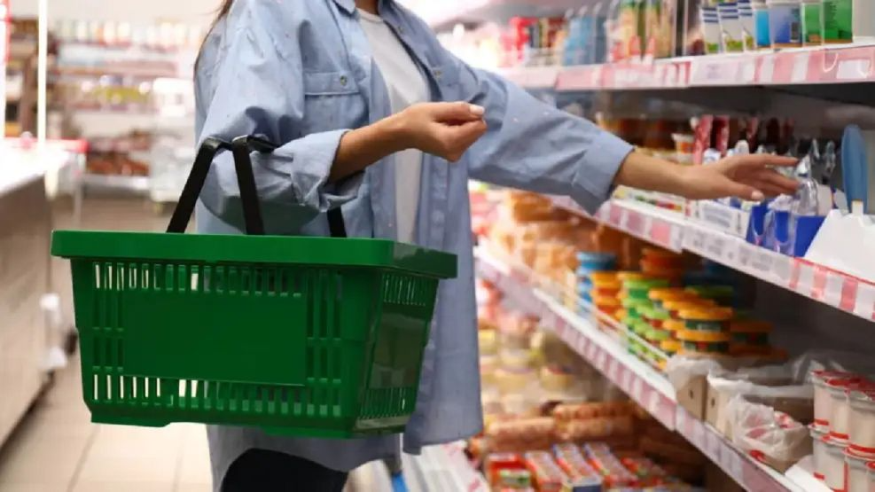

Consecuencias y señales de alerta dentro de Santa Fe ¿Qué está pasando?
Lo que pasa es que la gente en Santa Fe está comprando y comiendo menos, porque la plata no alcanza y los precios suben todo el tiempo. Por ejemplo: más personas recortan las compras porque el sueldo no alcanza para todo. Muchas familias sacan de la lista cosas que antes eran comunes como yogur, frutas, verduras y carne. Entre otras cosas.